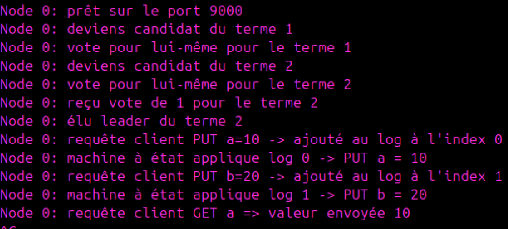

Ce projet a été réalisé dans le cadre du module de programmation système avancée en troisième année de BUT Informatique à l’IUT Montpellier-Sète. L’objectif était de concevoir une application en langage C simulant un cluster de nœuds communicants, capable de fonctionner de manière distribuée. Le travail s’est déroulé en groupe et a été structuré en plusieurs phases successives, allant de la mise en place des communications réseau à la gestion du consensus et de la réplication des données. Le projet s'est déroulé lors du 5e semestre du BUT.
Le développement a été organisé en trois étapes progressives afin de construire un système distribué complet. Dans un premier temps, nous avons mis en place une infrastructure réseau reposant sur des sockets TCP, permettant aux différents nœuds de communiquer entre eux via des mécanismes de ping et de synchronisation. Dans un second temps, nous avons implémenté un protocole d’élection inspiré de Raft, permettant à un cluster de désigner automatiquement un leader grâce à un système de vote et de temporisations. Enfin, nous avons ajouté une couche de réplication de données avec un journal distribué et une table clé-valeur, garantissant la cohérence des informations entre tous les nœuds. L’ensemble des échanges reposait sur un système RPC développé spécifiquement pour le projet, assurant la communication entre les différentes instances du cluster.
L’application finale permet de simuler un cluster de nœuds capable de s’auto-organiser, d’élire un leader et de maintenir un état cohérent même en cas de défaillance. Le système est en mesure de traiter des requêtes clients de type PUT et GET, en garantissant que les écritures sont validées par une majorité avant d’être appliquées. Lorsqu’un leader devient indisponible, un nouveau est automatiquement élu, assurant ainsi la continuité du service. De plus, un nœud redémarré est capable de retrouver son état en rejouant son journal, ce qui démontre la robustesse et la résilience du système distribué mis en place.

Ce projet m’a permis de développer des compétences solides en programmation système, notamment en langage C, notamment sur la gestion des sockets, des threads et des communications réseau. J’ai également approfondi ma compréhension des systèmes distribués à travers l’implémentation d’un protocole de consensus et la gestion de la cohérence des données. Le travail sur la réplication et la tolérance aux pannes m’a apporté une vision concrète des problématiques rencontrées dans les architectures modernes. Enfin, ce projet a renforcé ma rigueur dans la structuration du code, l’analyse de comportements complexes à travers les logs d’exécution.